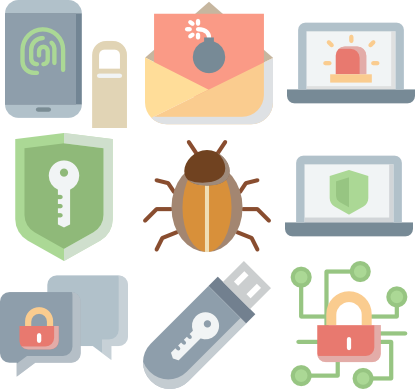
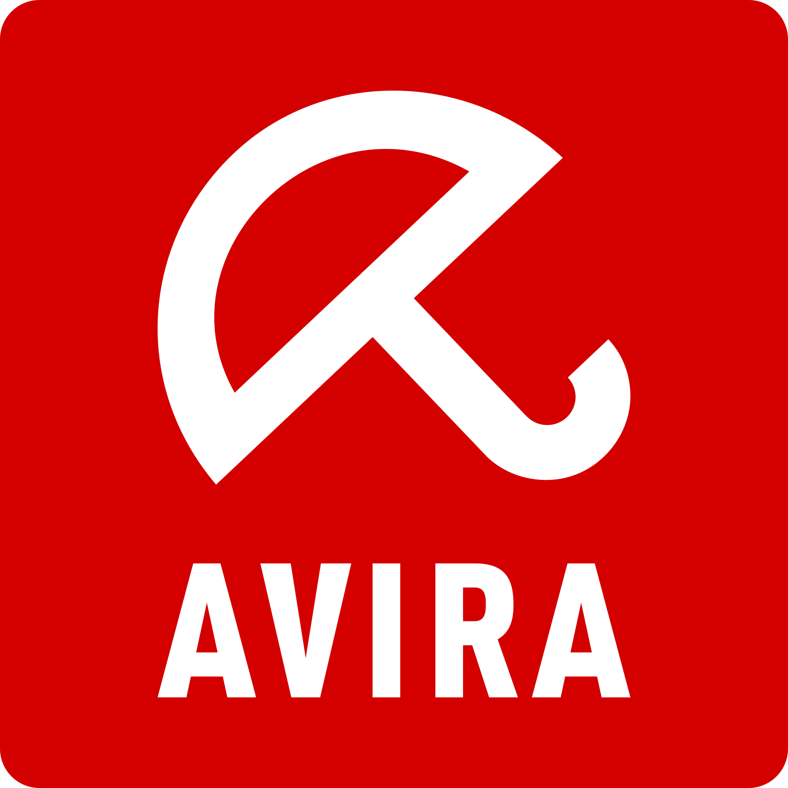
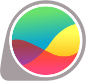
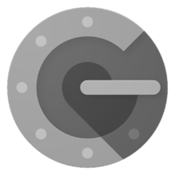
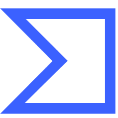

امـنـیـت رایـانـه
برای فعالان مدنی و روزنامهنگاران
{ امنیت عمومی }
ایرانسک
IranSecurity
IranSec
IranSec2
این محتوا با و تحت گواهی منتشر میشود (بیشتر بخوانید)
امنیت عمومی
راههایی ساده برای افزایش امنیت
آخرین به-روز-رسانی: فروردین 1402ناگهان چقدر زود دیر میشود!
این پیام یکی از فعالان مدنی پس از بازجویی و ضبط دستگاههای ارتباطی اوست. پیش از آن که دیر شود، پیشگیریهای لازم را انجام دهید.
چند نکتۀ ساده ۱
- برای هر شناسه رمزی یکتا داشته باشید و مرتب آن را عوض کنید.
- هر تارنمایی (آدرس اینترنتی) را باز نکنید.
- مراقب حملۀ دیدزدن (Shoulder Surfing) باشید.
- از نوشتن (به صورت عمومی) دربارۀ مسائل شخصیتان بپرهیزید.
- هنگام نصب برنامهها، اجازۀ نصب برنامۀ دیگری را ندهید.
- هر پیوندی را قبل از باز کردن بررسی کنید.
- حافظۀ جانبیای نامطمئن را به دستگاه خود وصل نکنید.
- هر پیوستی را باز نکنید. از خود بپرسید که آیا منتظر پیوستی بودهام؟
- همواره آدرس فرستندۀ پیام/رایانامه را بررسی کنید.
- اگر پیام مشکوکی گرفتید، صحتش را با فرستندۀ آن بررسی کنید.
- مراقب صفحههای فیشینگ باشید.
- مراقب پیوندهای کوتاه شده باشید.
چند نکتۀ ساده ۲
- برنامۀ ضد سرقت را روی دستگاه خود نصب کنید.
- از اطلاعات خود به صورت منظم پشتیبان(Backup) تهیه کنید.
- رمز پیچیده و یکتایی داشته باشید. آن را به صورت دورهای عوض کنید.
- نسبت به خطر Jailbreak/Root کردن گوشی خود آگاه باشید.
- نرمافزارها و سیستمعامل خود را بهروز نگه دارید.
- نرمافزارهای مورد نیاز خود را از منابع ایمن دریافت کنید.
- مراقب اطلاعات منتشرشدهتان در شبکههای اجتماعی باشید.
- ورود دومرحلهای (2Fa) را روی شناسههای خود فعال کنید.
- مراقب اخبار دروغ و جهتدار باشید.
- دوستان خود را پس از مواجهه با مشکل امنیتی مطلع کنید.
- دستگاه خود را در هر مکانی رها نکنید، حتا برای یکلحظه.
- اطلاعات خود را روی هارد، فلش مموری، گوشی و غیره رمزگذاری کنید.
برای راهنمایی بیشتر با ما تماس بگیرید: support@iransec.org
چرا رمز مهم است؟
* * *
ما در دنیایی زندگی میکنیم که ارتباط رودررو کم شده است. بسیاری از خدمات و تفریحها به فضای مجازی منتقل شدهاند. جدای از خوبیها و بدیهای این اتفاق، از نگاه امنیتی با پدیدههای جدیدی روبهرو هستیم: ماشینیشدن عملیات خرابکارانه و در نتیجه سرعت بالا، عدم وابستگی به زمان و مکان و در نهایت مواجه با نسل جدیدی از خرابکارها (گیک، نرد و عموماً کم سنوسال).
یک رمز ظرف چه مدت کشف میشود؟ (منبع)
12345qwert < 1 Second password1 < 1 Second iloveyou < 1 Second {May_P4$$} 18 Years
رمز قوی و یکتا
* * *
رمزی قوی شامل حرف/عدد متوالی یا کلمههای قابل حدس (نام خود یا اطرافیان، محل تولد، شماره تلفن و ...) نیست. طول آن حداقل ۱۰ حرف/عدد است. فقط برای یک شناسه استفاده و بهصورت متناوب عوض میشود. برای انتخاب رمز قوی و بهخاطر سپردن آن، نرمافزار مدیریت رمز به شما کمک میکند.
چند نمونه از رمز قوی؛ میتوانید آنها را بخوانید؟
/\/\y Stron9 Pa$$w0rd 3 x 1014 Years $^hk52fktni%_]hZ3 4 x 1015 Years Vlc o,f lk 2 x 102 Years {My_P4$$_*TW} 5 x 109 Years
اریک گریفیرت معتقد است که Passwords are Like Underware (رمزها شبیه لباس زیرند). او سه شباهت بین این دو را اینطور عنوان میکند: ۱- آنها را مرتب عوض میکنید ۲- با دیگران به اشتراک نمیگذارید و ۳- کاری نمیکنید که بقیه آنها را ببینند.
کدها و برنامههای زیادی به عنوان رمزشکن نوشتهشدهاند (مثل تصویر بالا). همانطور که دیدید؛ زمان شکستن قفل بسته به طول و پیچیدگی رمز، از چند ثانیه تا چندین قرن طول میکشند.
جدول لیت برای تبدیل حرف و عدد به کاراکترهای متفاوت است. این یک نمونه ترجمۀ جدول است. خلاق باشید و جدول خود را بسازید. حتا انتخاب رمز خود را با شیوههای دیگر ترکیب کنید.
همان طور که XKCD نشان داده است، سالهای زیادی یاد گرفتیم که رمز پیچیده بسازیم (مثلا بیتی از حافظ)، اما آیا این رمزی قوی است؟ چرا یک رایانۀ ساده میتواند چنین رمزهای پیچیدهای را بهسادگی حدس بزند؟
مهندسی اجتماعی
مهندسی اجتماعی سوءاستفاده از اطمینان یا فریب افراد برای دسترسی به اطلاعاتی است که منجر به هک شخص یا سازمانی میشود. هکر بهجای استفاده از روشهای معمول، از طریق فریفتن افرادی که به این اطلاعات دسترسی دارند میپرازد. در صورت نیاز با اطلاعات جمعآوریشده، در نهایت به هک فرد یا سازمان هدف میپردازد.
این شکل از پیامها برای شما آشنا نیستند؟
- کوت کنید بگید اولین ماشینی که داشتید چی بوده. - من عاشق کتاب «کیمیاگر»ام، شما چی دوست دارید؟ - اونایی که شیراز به دنیا اومدن اعلام حضور کنن.
هکرها از شیوههای مختلفی برای این کار استفاده میکنند. یکی از ابتداییترین روش، طرح پرسشهایی با انگیزۀ خاص در شبکههای اجتماعی یا پیغام خصوصی است.
حملهی فیشینگ
حمله فیشینگ (Phishing) برای بهدستآوردن اطلاعات مهمی مانند رمز عبور، از راه جعل یک سایت، آدرس ایمیل یا محتوای آن انجام میشود. قصد چنین حملهای فریب قربانی با جعل هویت یک فرد، سازمان یا شرکت است.
گزارش یک حملهی گستردۀ فیشینگ علیه فعالان مدنی ایرانی
- عکس جنجالی بازیگران زن - کلیک کن و یه آیفون 14 جایزه بگیر - یکشبه میلیونر شو - فایل رو بخون و نظرت رو بگو
در اردیبهشت ۱۳۹۵، ایمیل شهیندخت ملاوردی هک شد. هکرها با استفاده از ایمیل او فایلهای فیشینگ را برای فعالان مدنی ارسال کردند.
نمونهای از یک ایمیل فیشینگ. فعالان مدنی در ماههای نزدیک به انتخابات ریاستجمهوری ۱۳۹۶ شبیه آن را دریافت کردند.گزارش کامل
ابزارهای امنیتی
اابزارهای امنیتی به شما کمک میکنند که در مقابل حملههای تکرارپذیر یا آلودگیهای کشف شده مقاومتر باشید. این بدان معنی نیست که داشتن این ابزارها امنیت شما را بهتنهایی تضمین میکنند. به عبارت دیگر
ابزار امنیتی لازم است اما کافی نیست.
| رایانامه Riseup |
پیامرسان Signal |
مرورگر TOR |
|---|---|---|
| رمزگذاری کامل | رمزگذاری نقطه-به-نقطه | ناشناسی |
| دانایی صفر (یعنی چی؟) | مکالمۀ صوتی و تصویری | تغییر هویت آسان |
| بدون ردگذاری | رمزگذاری روی پایگاهداده | دورزدن فیلترینگ |
| ضد ویروس Avira |
بارو GlassWire |
ضد بدافزار MalwareBytes |
|---|---|---|
| مقابله با ویروسها | جلوگیری از ترافیک مشکوک | مقابله با سایر بدافزارها |
| مقابلۀ لحظهای | پایش شبکه و ثبت آن | مقابلۀ لحظهای |
|  |  |
بدون بهروز-رسانی، این ابزارها امنیت را تضمین نمیکنند.
| پشتیبانگیری Duplicati |
پاکسازی امن BleachBit |
مدیریت رمز* Bitwarden |
|---|---|---|
| اتصال به فضای ابری | پاکسازی امن | دستهبندی/اشتراکگذاری |
| رمزگذاری روی فایلها | پاکسازی رجیستری | پایگاهدادهی آنلاین |
* امنترین گزینه برای مدیریت رمز Bitwarden است.
| ورود دو مرحلهای Google Authenticator |
ناشناسی همراه Orbot |
ضد سرقت* Prey |
|---|---|---|
| افزودن یک مرحله به رمز | امکان تبدیل شدن به VPN | ردیابی دستگاه/عکس گرفتن |
| بدون نیاز به اینترنت/GSM | پشتیبانی از زبان فارسی | پاککردن اطلاعات دستگاه |
|  |
*به جای Prey میتوان از نرم افزارهای پیش فرض محصولات اپل و اندروید با نام Find my Device استفاده کرد. لازم است که آن را در دستگاه فعال کنید. برای دستگاه ویندوزی اما نیاز به نصب یک نرم افزار جانبی دارید.
| آنالیز امنیتی VirusTotal |
پهنکردن پیوند checkshorturl.com |
جستوجو DuckDuckGo |
|---|---|---|
| بررسی فایل و پیوند | پشتیبانی از بیشتر سرویسها | عدم ذخیرهی جستوجوها |
| بررسی در ۶۶ پایگاه | امکان بررسی امنیتی پیوند | دانایی صفر (یعنی چی؟) |
|  |
نیاز به کمک دارید؟
پرسشهای خود را با ما در میان بگذارید. support@iransec.org t.me/IranSec_Botحق مؤلف و تشکر
ااین نوشته بهواسطه تجربۀ چندساله در ارائه مشاورۀ امنیتی به سازمانها، کنشگران مدنی، روزنامهنگاران و شهروندان تهیه شده است. هرچند که تمام تلاشمان را کردهایم که متن حاضر بهروز و بینقص باشد، اما امکان ایراد وجود دارد. پس با آغوش باز پذیرای نقدها و پیشنهادها شما هستیم. لازم است یادآوری کنیم که این جزوهی امنیتی با گواهی کریتو کامنز (قابل استفادهی غیر تجاری، تخصیص و سهم یکسان) منتشر شده است. به حتم برای هر شکل از استفادهی تجاری از این مجموعه نیاز به کسب اجازه است.
در این پروژهی آموزشی از محتوای دیگران با گواهی قابلانتشار و تغییر استفاده شده است. از آن جمله میتوان به ارائهگر reveal.js، قلمهای لالهزار و وزیر و بی-یکان، شکلکهای ion و awesome و flat icons استفاده شده. در هر جای پروژه که عکسی استفاده شده منبع آن ذکر شده است. اگر منبعی از قلم افتاده است خوشحال میشویم که آن را گوشزد کنید.